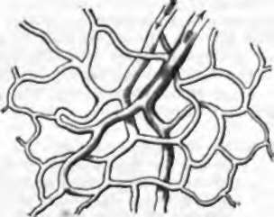

5. The Functions Of Animals
Description
This section is from the book "Animal Physiology: The Structure And Functions Of The Human Body", by John Cleland. Also available from Amazon: Animal Physiology, the Structure and Functions of the Human Body.
5. The Functions Of Animals
The Functions Of Animals may be enumerated as nutrition, reproduction, sensory functions, and movement. The first two of these, being equally characteristic of animals and vegetables, are sometimes termed functions of organic life; while those varieties of the other two which constitute sensation and voluntary movement are distinguished as the functions of animal life. In all, except the very simplest and minutest creatures, special parts or groups of organs are devoted to each of these different functions; while, in addition, there is a large amount of structure, whose office is to give protection or mechanical support to the rest of the body.
Nutrition includes the various processes necessary for the growth of the body and the maintenance of its substance. Every living part of every living being undergoes change in the particles of which it is composed, attracting and assimilating to itself materials around it, and parting with others which undergo decomposition; and these processes of waste and repair are in proportion to the activity of the part, every manifestation of life being accompanied with chemical and other changes. Thus a living being is a vortex, the particles of which are continually changing, while the form continues ; and vital energy is a force correlative with mechanical, chemical, and other forces found in the inorganic world.
It follows from this that every part of a complex body, like that of man, requires a supply of nourishment to be brought to it, and a channel of escape for waste products; and to meet these requirements there are many different organs. The immediate source of nourishment of all the tissues is the blood, but to recruit the supply of this fluid new materials have constantly to be taken in; and to fulfil this end, the alimentary canal receives the food and digests it, that is to say, reduces the newly received materials to such a condition that they can be taken up by processes of absorption from the cavity of the canal, and carried to the blood. To complete the elaboration of the blood, and free it from impurities constantly resulting from waste, a variety of organs are engaged, of which the principal are the lungs, spleen, liver, kidneys, and skin. Lastly, to convey the blood to and from the tissues which it nourishes and the organs in which it is purified, a system of ramifying vessels is required, and a heart with muscular force sufficient to propel the blood through them.
Fig. 1. Diagram of Capillary Network, with termination of an Artery and commencement of a Vein.
It may be here mentioned that the system of blood-vessels is completely closed in all vertebrate animals, the blood being distributed from the heart by arteries, circulating through the tissues in a network of minute vessels called capillaries, and returning to the heart by veins. But the capillaries, which have an average diameter of only 1/2000 of an inch, have walls of extreme tenuity, which allow, with the utmost freedom, the transition of materials outwards and inwards between them and the surrounding textures.
Reproduction is the function by means of which new individuals are developed from portions of pre-existing living beings; and, although it is not generally so diffused throughout the body as the function of nutrition, but is delegated to special parts, yet it may be remarked that in many low forms of animal life, and some even of the higher vegetable forms, a large amount of reproductive power pervades the entire organism. Also, in the higher animals there exists an ill-understood connection between the reproductive organs and the nutrition of the body generally, which is of a twofold description; the nutrition of the body being importantly modified by the condition of these parts, and the minute peculiarities of all parts of the body being capable of transmission to the offspring.
Sensation is a psychical, and not a physical condition; but it is associated and bound up with changes in the body, the seat of which is the nervous system. The mind is not influenced by external objects, save when these irritate nerves or organs of sense into a state of activity, and the active condition, travelling along nerve-trunks, reaches the part of the brain with which the mind is specially and inscrutably linked. And not only is an active condition of the brain necessary to influence the intelligence by external objects, but a like active condition accompanies all emotion and every operation of the mind.
Movement of a voluntary description is accomplished by muscles receiving, through nerves, their stimulus to action from the brain, which in turn is stimulated in an unknown way by the will. Thus, the central nervous system is both the terminus to which messages from the organs of sense are sent, and that from which commands to the voluntary muscles proceed.
All sensory function, however, is not sensation, and all movement is not voluntary. The nervous system may receive an influence from without, and transmit it to groups of muscles, without intervention of any act of consciousness.
This is what is called reflex action (p. 178), and in such a case the part irritated, from which the nervous impulse starts, is still said to have sensibility, and the nerve to be sensory, although there is no sensation, and the movement is involuntary. Also, the property of response to irritation is not confined to the nervous system; structures may alter their shape or undergo other change on application of a stimulus, and this property is termed irritability. The active part of change of shape or movement probably in all cases consists in contraction, and is hence called contractility.
Irritability and contractility, although they may well be included under the terms sensory function and movement, are not, like sensation and voluntary movement, confined to animals. They are found in the vegetable world also; and it may be maintained with probability, that they are properties of every living part of every living being.
Continue to: